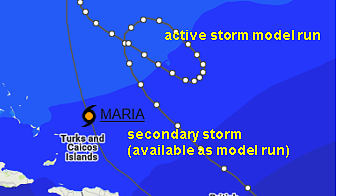
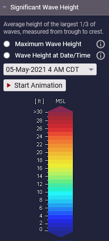
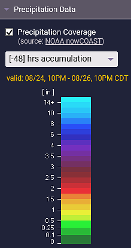

Coastal Emergency Risks Assessment - CERA
About
The Coastal Emergency Risks Assessment (CERA) web mapping tool displays storm surge, wave, and flood prediction maps for impending or active tropical cyclones or severe weather situations that threaten the coastal areas of the United States. CERA provides an easy-to-use interactive web interface that allows emergency managers, weather forecasters, and GIS specialists to retrieve real-time forecasting results to evaluate the impacts of such events or to see the tide, wind-wave, and extra-tropical surge conditions on a daily basis.
CERA has been developed at the Louisiana State University in collaboration with Louisiana Sea Grant. The information shown on the CERA website is produced by several global, US wide, and regional models that generate real-time surge and flood guidance. One of the main models used by CERA is the unstructured coastal ocean circulation model ADCIRC.
Contact
Please visit the CERA Homepage for more information. You can contact us by using the contact form or sending an email to info@coastalrisk.live for any questions.
Disclaimer
The information on the CERA website represents storm surge, flood, wind, and wave information from coastal ocean and inland flooding models. The storm surge model data and the CERA graphical displays are research efforts and should never be conveyed as official storm surge guidance for the general public. Please obtain official storm surge guidance from the National Weather Service.
Overview
https://cera.coastalrisk.live
CERA provides 2 websites:
The CERA websites are optimized for screen display resolutions of 1024x768 px or higher. While the sites stretch to their full extent on higher resolution devices, CERA is currently not optimized for mobile devices or devices with a low screen resolution.
Websites Features
The graphic shows the CERA PRO website. Not all features are available on the public CERA website.
1. CERA Map Display
CERA uses Google Maps to show a topographical map and overlays it with the map layers you choose from the menus along the top and right side of the page (see 4. Select a model run by Day or Storm and 6. Map Layers). Using the zooming feature along the left side of the page you can zoom in to see more detailed information of the maps (see 5.5 Zoom In/Out). You can change the Google background map by opening the "Background Maps" panel at the right side of the CERA website (see 6.2 Background Maps). To pan across the page, click and drag the map. The title bar above the map indicates which map layer you are viewing (see 7. Map Title).
2. Login Settings (PRO)
The CERA-PRO website uses cookies for website settings and security reasons to ensure that your browser is not being hijacked by third parties. If you have configured your browser to disable cookies, please re-enable them or set an exception for the website address cera.coastalrisk.live.
The public CERA version does not require a login. However, the site allows you to login to the PRO website and with that to access the advanced functionality.
Credentials for the CERA PRO website can be obtained by sending a request to the CERA team. Please use the Sign Up link at the top left of the public website to fill out the request form. You can also write us a direct message by using the Contact Us link in the footer section (see 9.2 Contact Us) or by clicking the Help & Info button at the top right of the website (see 8.1 Help & Info) or writing us an email to info@coastalrisk.live.
If you work for a federal or state agency or institution, emergency management or response, or a research institution, you will get granted a free login.
Once you have obtained user credentials, you can login to the CERA PRO website.
Go to the public website at https://cera.coastalrisk.live and use the Login button at the top left of the website. After a successful login you get redirected to the CERA PRO website.
Once logged in, you have access to the Logout and Settings links.
CERA works with cookies to give you a convenient user experience. Your login credentials and map settings (see 8.2 Map Settings) get stored and reactivated with every new CERA session. If you explicitly log out, you will need to login again to enter the CERA PRO website.
If you have forgotten your password, access the login form by hitting the Login button at the top left of the website and use the Forgot your password? link. If you are currently logged in, use the Logout link first and then log in again to enter the form.
Go to the login Settings link at the top left of the website and use the link Change your password at the top of the form to modify your current password.
When you apply for CERA credentials, a user name and a temporary password will be created for you. The user name is your email address. If you would like to request a change to the user name, please contact us via the contact form or send an email to info@coastalrisk.live.
The login Settings link will open the user profile form with an overview of your user information. If you would like to make changes or additions, use the Edit Profile button. This will open the Profile form that allows you to modify your personal information.
3. Select a model
CERA provides three different storm surge or flood models:
- The ADCIRC Surge Guidance System (ASGS)
This model uses the coastal ocean circulation model ADCIRC and produces water level, wind, and tide forecasts on a daily basis for several regions of the US in high resolution. During active storms, the ASGS provides data four times a day (00Z, 06Z, 12Z, 18Z UTC). - The Extratropical Surge and Tide Operational Forecast System (ESTOFS)
The ESTOFS system is developed by NOAA and uses the ADCIRC model to produce global water level and wind guidance on a daily basis. - The Compound Flood Inundation Guidance System (CFIGS)
CFIGS combines precipitation and coastal surge to provide flood information during severe weather events. This sytem is currently available for selected watersheds in Louisiana.
Once you are logged in, you can select a model from the select box at the top right of the website. The 'help button' next to the select box provides more information about the models.
If you prefer a specific model to be displayed by default upon opening CERA, you can make this choice using the map settings (see 8.2 Map Settings).
4. Select a model run by Day or Storm
CERA provides an archive of models runs that you can browse through. To select a run, you can either search by 'Day' or by 'Storm'. By clicking on a button, the select menu will change. The active button is the blue one.
When you open the CERA website, the most current model run is always displayed as default map. Depending on the status of the default model run (active storm or not), the default setting of the Select by Storm or Select by Day menu is either set to "Day" or to "Storm". Non-storm model runs can only be accessed via the "Select by Day" menu while storm runs can be selected from both the "Select by Day" and the "Select by Storm" menus. You can always switch between the "Day/Storm" select settings.
When you open the CERA website and there is no active storm present, the Select by Day menu is pre-selected. This menu allows you to view data for the current Day or one that you choose from the calendar icon. Days with at least one model run are highlighted in light grey in the calendar. The selected day has a blue border. If a day has at least one storm run, the date field is marked in red. Use the Start Time select box to select a time. This time marks the beginning of the model run.
The "Best For" select box is only available for the CERA PRO website (see 4.3 "Best For" Selection)
The "Select by Storm" menu allows you to choose storms that impacted the Northern Gulf or Atlantic Coast. When there is an active storm present when you open the CERA website, the Select by Storm menu is pre-selected. You will see the model run for the current Year/Storm and the latest Advisory/Track from the National Hurricane Center (NHC). For each advisory there might be several track variations available, although the default for each advisory is the NHC forecast track. You can select a track variation by choosing it from the "Advisory/Track" select box. Hover over the current advisory number to see the track variations.
Variations can include an x% increase in the maximum wind speed, veer to the left and the right of the NHC forecast track by x%, and an x% increase in the maximum radius of the storm (see also 6.3 Tropical Cyclone Activity).
If there is no active storm present and you switch from the "Select by Day" menu to "Select by Storm", no select box is pre-filled. Select first the Year/Storm that you are interested in and then the Advisory/Track to see a particular model run.
The "Best For" select box is only available for the CERA PRO website (see 4.3 "Best For" Selection)
The ADCIRC storm surge model utilizes triangle-based meshes that provide geographical information, such as the land surface elevation or the land cover type. This allows the model to be applied in different locations and at different resolutions (i.e., using smaller or larger sized triangles). Resolution has a significant impact on the accuracy of the model results because it ultimately controls the model's ability to represent land features that direct the movement of water.
The CERA PRO website allows users to display model runs on several meshes that are tailored to specific geographic regions. The Best For (geographic region) information field indicates the geographic area for which the displayed model run shows its highest resolution for floodplains and inland water bodies.
5. Map Tools
The Map Tools buttons on the left side of the map allow you to interact with the map and change features in several ways. You can hover over each button to get a tooltip information.
The Search location or address button allows you to search for a specific coordinate, an address, town or any other location and let the map zoom in to this place.
Click on the "Search location" icon and enter the coordinate (in the format lat, lon) or the name of the place you are looking for. Hit the "Enter" button or select an entry from the select box to let the map zoom in to the desired place. If you want to close the address field, click on the "search" icon again or anywhere on the map.
The Zoom to a map region button opens a select box with pre-defined zoom-in views that allow you to quickly zoom in to a region without using the zoom in/out functionality.
Click on the "Zoom to a map region" icon to open the select box and then click on a region. The map will automatically pan and zoom in to show you the selected view. If you want to close the select box without making a selection, click on the " map region" icon again or anywhere on the map.
Enabling the Time series button allows you to click on a point of interest on the map to display a graph showing how the map layer you choose changes over time at this location (figures below).
The default setting for this tool is "Off". If you click on the "Time series" icon, the functionality will get enabled and the icon turns blue ("On"). Your mouse cursor will change from a hand ("pan the map") to a cross (indicating that you can click on the map). Clicking on the "Time series" icon again will disable the functionality and the mouse cursor and the icon color change back to the default settings.
Once you have enabled the "Time series" button (turning it into a blue icon), you can click on any map point of interest within the model area. For regional models other than the entire coast, the model area is marked by the wavy black line that you can see inland (see 6.1 Model Boundary). Beyond this line no model results are available.Clicking on the map will open a chart window with a time series plot that shows you the values over time as forecast by the storm surge model. The Map Settings dialog at the top right of the website allows you to choose what time zone (Central/Eastern Time/UTC) and units (U.S. units/Metric) you want to see in the charts (see 8.2 Map Settings).
Hovering on the line on the graph will result in an information box that shows additional information at any selected time.

- The maximum value is denoted as a red dot on the graph as well as in text above the graph.
- You can zoom in on the graph by clicking and dragging on the time interval you want to zoom in on.
- For water levels or wave heights the values are given either relative to NAVD88 or to Mean Sea Level. The information is denoted in the header line.
- Each point on the map is set to either dry or wet, which tells you whether the elevation or bathymetry value of this point is initially above or below Mean Sea Level when the model starts to run. This is denoted at the bottom line of the chart. Here you can also find the elevation information of this point.
- If you look at a chart for the wind speed map for an active storm, you can also find information about the onset time of tropical storm force winds (see 6.8 Wind Speed).
Find a time series chart by coordinate
If you use the time series functionality, a chart will open at the point that you have clicked on the map. The clicked point represents a geographic location with a particular coordinate (lat, lon) that will be displayed in the header section of the chart. If you change a map layer, the chart will stay open and update the information accordingly to the selected layer.
If you would like to open a chart for a known coordinate, you can use the Search location or address map tool (see 5.1 Search location or address). Activate the Time series button so that it turns blue and then click on the Search location or address button to open the select box. With an already open chart, the coordinate for the point is pre-selected in the search box. For another location, enter the coordinate in the format "latitude, longitude" (without quotes). Once you hit Enter, the map will be centered to the searched location and the chart opens automatically.
Download time series for a specific location on the map
With an open time series chart, you can download the selected time series in the JSON file format. The "Download" link is at the top right of the time series chart. The download will be provided as a ZIP file that contains the JSON file with hourly time series values and a format description.
Use the View map in full screen button to make the map full screen and with that hide all elements other than the map itself.
Click the "Exit full screen" button at the top left of the full screen map or hit "Esc" to get back to the default map view.
Using the zooming features you can zoom in and out to see more detailed information of the maps or get a better overview. The Zoom in / Zoom out buttons change the zoom level of the maps as pre-defined by Google Maps. You can also double-click with your left mouse button to zoom in and the right mouse button to go back to the previous zoom level. Using the mouse wheel allows you a quicker zoom in/out.
6. Map Layers (Legend)
The Map Layers panel on the right hand side of the website allows you to choose what model results you would like to see and to customize your map with additional data layers.
The map layers are grouped in sections that can be opened and closed (accordion). When you open the website, all map layers that are currently displayed on the map are open in the "Map Layers" panel; all others are closed. Click on the "Map Layers" header title or the little triangles to open/close map layer sections in the panel.
The "Water Height", "Inundation Depth above Ground", and the "Wind Speed" are forecast results from the ADCIRC Storm Surge Model. The "Significant Wave Height" and the "Peak Wave Period" are results from the Simulating Waves Nearshore (SWAN) Model which might not be available for all CERA displays. All model layers are selectable by radio buttons and with that one of those layers is always displayed. Map layers that are selectable via a check box can be overlaid on the displayed model map. Depending on the model run and data availability some map layers are not always present.
The "Map Layers" panel can be closed to show more of the map by clicking on the close button at the top left of the panel. To reopen the "Map Layers", click on the Open the Map Layers Panel icon at the top right of the map.
The ADCIRC model works with several different model meshes to represent a target region in high resolution (see 4.3 "Best For" Selection). The boundary represents the cut-off of where the model stops inland. It is drawn as thin black line on the map. Beyond this line no model results are available. The model boundary is turned on by default for regional high resolution model runs to highlight the geographic region that the model represents best.
Choose which Google Map you prefer as the background map: road, satellite, hybrid, or terrain. Your selection stays active for the current CERA session but will be set back to the default map (Road Map) when you reopen the CERA website.
This map layer section is only present when the model run represents an active storm.

Hover over the "i" icons to see tooltips with more information.
The figure below shows the track and intensity forecast as displayed on the CERA website. The dark red line is the forecasted track at the center of the cone of uncertainty, while the black lines to the left and right of the track show the edges of the cone. A grey line indicates that the track line is outside the model forecast time range. The track shows track points every 3 hours. Six hour time stamps, which is when the NHC releases new advisories, are displayed on the map along with a larger color-coded dot and a time label indicating intensity from tropical depression (blue dot) to category 5 (red dot). In lower map resolutions these dots are displayed every 12 hours. If you want to see the track information without the time labels, you can hide them from being displayed in the Map Settings dialog (see 8.2 Map Settings).

Move your mouse over any colored (labeled) track point to get a tooltip with track information from the National Hurricane Center. The tooltip has the same color as the track point category (from tropical depression (blue dot) to category 5 (red dot)).
Click on any dot along the track and the display will change to the map layer showing the selected date/time (e.g., water height) you want to view. The time you chose will be displayed in the select box in the Map Layers panel (see also 6.4.-6.8 Time Series Maps). The selected track point is marked in a bright red color.
These track variations are x% of the way between the NHC official forecast track and the left or right edge of the cone of uncertainty. When viewing a left and right veer, the official NHC forecast track (at the center of the cone of uncertainty) is always denoted on the display by a bright red line. When you hover over the "i" icon in the Map Layers panel you can see a tooltip with more information about the track variation.
For some storms additional track variations are provided like an x% increase in the maximum wind speed or and an x% increase in the maximum radius of the storm. If available, you can select those track variations from the Select by Storm menu (see 4.2 Select by Storm).
The National Hurricane Center (NHC) designates areas of disturbed weather that are being monitored for tropical cyclone development. CERA displays those "areas of investigation" for the particular time that the model run is valid for (see the information in the Map Title (7. Map Title). If you move the mouse over an area of investigation, a tooltip is displayed with the NHC Tropical Weather Outlook information.
You can turn off the areas of investigation by unchecking the select box in the map legend section "Tropical Cyclone Activity".
If more than one storm is active, the CERA website shows one storm as model run and the other storm as inactive track line (thin grey line without track points). The inactive storm track just shows the hurricane symbol with the name of the storm and the color-coded symbol which indicates the storm category (tropical depression to category 5).You can hover over the hurricane symbol to see the current advisory number and the storm information from the National Hurricane Center.
If the secondary storm is available as a separate model run on the CERA website, the storm name becomes an active link (underlined storm name). If you click on the link, the map will change to show this storm as the active model run.

Sections 6.4-6.8 describe map layers that represent model outputs from the ADCIRC storm surge model and the Simulating Waves Nearshore (SWAN) model. Depending on the model run and data availability some map layers are not always present. The data are normally represented in two ways: a maximum layer and time series maps every 3hrs (PRO).
For the forecast layers Inundation above Ground, Significant Wave Height, Peak Wave Period, and Wind Speed animated time series are available that can be turned on by clicking the "Animation" button in the map legend panel sections.
There are two common ways for representing surge model results. One is water height relative to the vertical datum as used by the storm surge model (NAVD88 or Mean Sea Level (MSL)); the other is inundation depth above ground, which is discussed in section 6.5 Inundation above Ground.
You can view the water height above NAVD88/MSL that is calculated by the storm surge model in two ways:
- Maximum forecasted water height: The highest water level - or worst case scenario - over the forecast period. The highest water level is not at a certain time; instead the maximum value is shown for each point on the map regardless of what time it occurs.
- Water height time series (PRO): pick the time (from three hour intervals) at which you want to view the water height.
Inundation is the depth of water above local land elevation. The local land elevation, or topography, used in the storm surge model is derived from the State's LIDAR coverage. To calculate the inundation depth, the topography is subtracted from the total water height calculated by the storm surge model. See the inundation illustrations below.
Illustration of inundation depth above ground depending on tides. The red arrows indicate the inundation depth. It is calculated by subtracting the local land elevation from the water height above MSL (surge + waves + tides) that the storm surge model calculates.
Similar to the water height above NAVD88/MSL map layer, you can choose to display:
- Maximum forecasted inundation depth - or worst case scenario - over the forecast period. The highest inundation is not at a certain time; instead the maximum value is shown for each point on the map regardless of what time it occurs.
- Inundation time series (PRO): pick the time (from three hour intervals) at which you want to view the inundation depth.
This layer allows you to display the forecasted significant wave height during a forecast period. The significant wave height is a term used in marine forecasts that is defined as the average height of the largest one-third of all the waves (with their different heights, frequencies, and direction of movement), measured from the trough to the crest. When you read "Seas 4 to 6 ft" in a NWS marine forecast, you are getting the significant wave height. If you would like to learn more about significant wave height, see this description from NOAA's National Weather Service.
You can choose to display:
- Maximum forecasted significant wave height - or worst case scenario - over the forecast period. The highest significant wave height is not at a certain time; instead the maximum value is shown for each point on the map regardless of what time it occurs.
- Significant wave height time series (PRO): pick the time (from three hour intervals) at which you want to view the significant wave height.
During a storm, no peak wave period time series is available, just a maximum layer.

The peak wave period time series is available as a maximum layer for storm runs until 2018.
This map layer shows the peak wave period (or frequency) that is forecast over the model time period. Peak wave period can give you an idea of how often battering waves will impact dunes, buildings, etc. along the coast.
You can display:
- Maximum forecasted peak wave period - or worst case scenario - over the forecast period. The highest peak wave period is not at a certain time; instead the maximum value is shown for each point on the map regardless of what time it occurs.

Depending on the model run, the wind speed layer is either provided relative to ground level or at 10m (33ft) height. Please look at the section title in the Map Layers panel to see what you are looking at. During a storm, the wind speed is calculated by taking input from a National Hurricane Center advisory and plugging it into a wind model that was developed for the storm surge model. The output from this wind model is not only used to produce the wind speed map layer but also to calculate the storm surge values (it is the wind that pushes the water). For non-storm model runs the wind input is taken from NOAA's North American Mesoscale Forecast System (NAM).
You can choose to display:
- Maximum forecasted wind speed - or worst case scenario - over the forecast period. The highest wind speed is not at a certain time; instead the maximum value is shown for each point on the map regardless of what time it occurs.
- Wind speed time series: pick the time (from three hour intervals) at which you want to view the wind speed.
no active stormactive storm (values correspond to the Saffir-Simpson scale)
If you use the Time Series map tool (see 5.3 Time series) to see the wind speed at a specific geographic location, you will see the onset time of tropical storm force winds in the information chart (for a storm model run).
The CERA website provides observational stations that can be overlaid on selected map layers. In order to see those stations you must first select the appropriate map in the map legend. Once you have choosen the map display, the corresponding stations can be checked by opening the Observations section in the map legend.
Please choose the following map layers:
- water level stations: water height or inundation depth map layer
- wind stations: wind speed map layer
- wave stations: significant wave height map layer
When you check the observational stations, various stations, represented by different colors of markers, will appear on the display. For water levels, these are real-time stations from the NOAA National Ocean Service (NOAA-NOS), the U.S. Geological Survey (USGS), the NOAA River Forecast Centers (NOAA-RFC) or the US Army Corps of Engineers (USACE). Wind speed stations get provided by the NOAA National Ocean Service (NOAA-NOS). Wave stations observations are retrieved from NOAA's National Data Buoy Center (NDBC) or the IOOS and partners. To limit the display to particular agencies, just select those select boxes.
Each station on the map shows a tooltip when you hover over it. When you click on a station, a chart will be displayed with more information. The status of a station can change from one model run to another depending on data availability.
Blue/orange/yellow stations: The charts for these stations will show both a graph for observed time series and a graph with the levels as forecast by the model.
- The blue line represents observed levels (every hour). You can view the station's real-time observation website by clicking on the link in the bottom left corner. Note, that for water level stations on the CERA website the vertical datum of the water levels has been converted to NAVD88 or Mean Sea Level (MSL) to match the results from the storm surge or flood model and can therefore show different values than the original station's website. The information about the vertical datum is displayed in the header section of the chart.
- The yellow line shows the levels as forecast by the model (every hour).
- orange dashed line (water level stations only): If a previous advisory for a given storm run is available, this line shows the forecast water levels from that advisory for comparison purposes.
Occasionally, real-time stations from several agencies go off-line during a storm so that the CERA website cannot display the observations for those stations (no blue line). You will see then only the yellow/green/orange line on these graphs representing the time series forecast by the model. These stations are denoted as a white map icon. You can still view the station's real-time observation website by clicking on the link in the bottom left corner. On the other hand, for some stations, represented by a grey map icon, there might be no forecast levels from the model (no yellow/green/orange line), e.g., because the geographic location of the station does not get flooded at that time. In that case you will only see the blue line with real-time observations.
- The Map Settings dialog at the top right of the website allows you to choose what time zone (Central/Eastern Time/UTC) and units (U.S. units or Metric) you want to see in the charts (see 8.2 Map Settings).
- The header line shows the name and the station number of the real time station as given by the agency that hosts and maintains this station. If a station has a cross-reference to another agency, the station number and agency is given in brackets.
- The forecast maximum value is denoted as a red dot on the graph. The current advisory or the model run start time is displayed as a red line on the chart.
- You can zoom in on the graph by clicking and dragging on the time interval you want to zoom in on.
- For water level stations the values are given either relative to NAVD88 or to Mean Sea Level. If available, the information about the offset between NAVD88 and Mean Sea Level is displayed in the footer section of the chart.
- Hovering on the lines on the graph will result in an information box that shows additional information at any selected time.
A water level station allows you to download the hydrographs for this particular station by using the "Download" link at the top right of the chart. The downloaded file is in the JSON file format and includes the station information and the observed and forecast water levels. If you would like to download the hydrographs for all water level stations for the displayed model run, use the Download button at the top right of the website (see 8.3 Download Data). Note, that older model runs do not provide the hydrographs download capability. In that case you do not see a download link on the chart.
For the ADCIRC Surge Guidance System (ASGS), radar rainfall imagery can be overlaid on top of the storm surge model results. This might be useful to get a better understanding of the total amount of water, including surge and rainfall. The radar data is retrieved from NOAA nowCOAST and is especially useful to see estimated values over a large area. The drop down menu allows you to view accumulated values from the last 6, 24, and 48 hours.
The Compound Flood Inundation Guidance System (CFIGS) provides maps that show the combined impacts for surge and rainfall (see also 3. Select a model)

For maps from the ADCIRC Surge Guidance System (ASGS), this section allows you to turn on the NOAA shoreline map layer. The shoreline can help you to easily see where land ends and water begins on the map.
For some model runs this section also allows you to overlay the map with model barriers. Barriers are features like levees or roads which prevent the water in its natural flow. This can support the interpretation of model results in specific geographic areas like the levee protected area of Greater New Orleans.
7. Map Title
For each displayed map a title bar above the map indicates which map layer you are viewing and the time the particular model run is valid for. The map title changes with each model layer that you select in the map panel (see 6. Map Layers). If a storm is present, you will see additional information in the map title section.
For the map layers "Water Height" (see 6.4 Water Height) and "Significant Wave Height" (see 6.6 Significant Wave Height) the vertical datum (NAVD88 or Mean Sea Level) is given so that you know the reference height that the model results are related to. The vertical datum can change with each displayed map depending on the storm surge model setup.
The map layer title for non-storm model runs shows the map layer that you are looking at and that corresponds with the selected layer in the Map Layers panel (see 6. Map Layers). It also shows the time the model run is valid for.
For active storms additional storm information is displayed in the map title section. Besides the map layer and the time the model run is valid for, the storm title indicates the name of the storm, the advisory number from the National Hurricane Center, the track information and the source of the wind input for the model. The track information shows whether the track is the official NHC forecast or a track variation. For each track a short description is provided in the Tropical Cyclone Activity section in the "Map Layers" panel (see 6.3 Tropical Cyclone Activity) - hover over the "i" icon to get a tooltip.
8. Map Buttons
- Help & Info
- Map Settings
- Download Data (PRO)
- Share this Map
The Help & Info button opens a dialog which gives you access to the CERA homepage, the ADCIRC storm surge model homepage, the Contact Us form and the CERA tutorial (this page). You may also want to follow us on Twitter by clicking the Twitter button for "CERAStormSurge".
The Map Settings allow you to customize your map. If you have allowed the use of cookies, your preferences will be saved for upcoming CERA sessions.
You can make the following settings:
- Model (the model that will open by default when you log in - see also 3. Select a model)
- Time Zone
- Units
The "Time Zone" and "Units" settings influence all time-related features like the Day/Storm menus, the map title, the map layers select boxes and color bars, the information charts etc.
- Show date/time labels for the storm track
The Download option allows you to save the displayed data layers in several data formats.
- Download Shapefile Polygons
- Download Shapefile Points
- Download GeoTIFF (for map layer "Inundation above Ground" only)
- Download CSV File (comma separated)
- Download NetCDF File
- Download Hydrographs
The first 5 download options download the actual model layer that is currently displayed on the map. The information about the currently displayed map layer is shown in the header section of the dialog. Downloadable layers include the Water Height, the Inundation above Ground, the Significant Wave Height, the Peak Wave Period, and the Wind Speed but not any currently overlaid features (like the shore line or water level stations). The downloaded dataset neglects the selected zoom level and always provides the data for the entire model domain.
The Shapefile Polygons provide the data in aggregated levels. The shapefile package includes an accompanying color file (lyr) that allows you to directly open the data in ArcGIS. The Shapefile Points and the comma separated CSV file allow you to download the full dataset with every node (point) of the underlying ADCIRC model mesh. The NetCDF option represents the raw model data and downloads the data in a binary format.
Note, that the "Inundation above Ground" layer is not available in the Polygons Shapefile or NetCDF file format. Instead, this layer is made available as a GeoTIFF file.
The Download Hydrographs option allows you to download the hydrographs from the water level stations in the JSON file format. To see what water level stations are available for the currently displayed model run, you may select the Water Level Observations data layer in the map layers panel (see 6.9 Observational Stations). However, you do not need to select this layer to download the hydrographs. The downloaded hydrographs package includes a JSON file for each water level station with the full station information and the observed and forecast water levels. If you want to download the hydrographs for a single water level station, open the hydrographs chart for this station by clicking on the icon on the map and use the "Download" link in the upper right corner. Note, that older model runs do not provide this download capability.
If you want to share the current display of the CERA website (including the selected map layer, the active overlay features, and the selected zoom level), you can use the Share this Map button to retrieve the CERA link. Disable the "Short URL" select box if you want to get a full link instead of an abbreviated one.
9. Header & Footer Info
Click anywhere on the CERA Coastal Emergency Risks Assessment banner to get forwarded to the CERA homepage that provides additional information about the CERA web interface and the fully automated workflow to run the ADCIRC model in real-time.
The footer section shows you additional information about CERA, our collaborators and partners, disclaimer and data information, and how to contact us.
Acknowledgement
The CERA maps are based upon work supported by Louisiana State University, Center for Computation and Technology, Louisiana Sea Grant and Louisiana's Coastal Protection and Restoration Authority (CPRA).